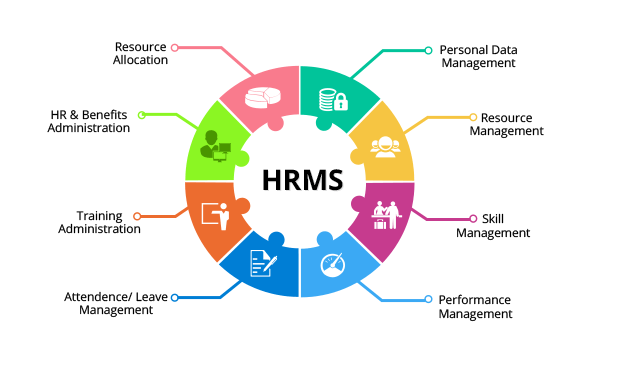

HRMS Automation

Project Overview
Led the development and implementation of an automated testing framework for a comprehensive Human Resource Management System (HRMS). The project focused on streamlining HR processes and ensuring system reliability through extensive test automation using C# and SpecFlow.
Key Responsibilities & Achievements
- Developed and maintained automated test scripts using C# and SpecFlow
- Implemented Page Object Model (POM) design pattern for better maintainability
- Created data-driven test framework using NUnit and Excel data providers
- Achieved 80% test coverage across critical HR modules
- Reduced manual testing effort by 60% through automation
Technologies Used
- C#
- SpecFlow
- NUnit
- Cucumber
- Git
- Extent Reports